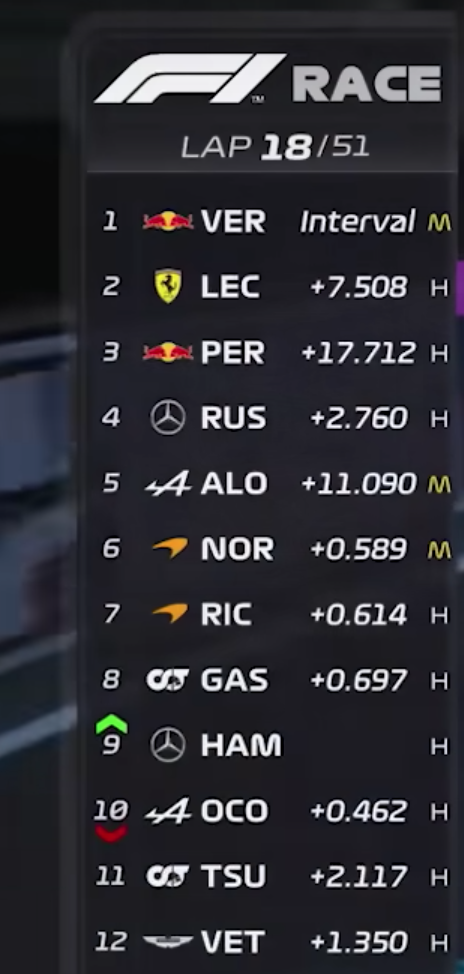

|
Unitatea de Putere (Power Unit)
Capacitate și configurație: Motorul rămâne un V6 turbo de 1.6 litri, cu șase cilindri în V la un unghi de 90 de grade. Regimul de funcționare este de maximum 15.000 rpm. Greutate minimă: Motorul trebuie să cântărească cel puțin 150 kg. Sistem ERS (Recuperarea Energiei): Motoarele includ un sistem de recuperare a energiei (ERS) îmbunătățit, cu două componente principale: MGU-K: Capabil să recupereze și să redea până la 350 kW (o creștere majoră față de generația anterioară). MGU-H: Sistemul de recuperare a energiei termice rămâne în uz, permițând echipelor să stocheze sau să direcționeze energia recuperată direct către MGU-K. Sursă principală de energie: Singura sursă de energie admisă, pe lângă combustibilul standard, este sistemul ERS. |
Șasiul
Înălțime: Nicio parte a caroseriei nu poate fi mai mare de 950 mm față de planul de referință. Lățime: Lățimea maximă a caroseriei, fără anvelope, nu poate depăși 2000 mm, iar distanța între marginile laterale ale șasiului trebuie să fie de maxim 1600 mm. Greutate: Greutatea minimă a mașinii cu anvelope pentru vreme uscată, trebuie să fie de cel puțin 798 kg, o creștere față de anii precedenți pentru a susține structura de siguranță și componentele mai complexe. |
|
Transmisia
Cutie de viteze: Sistemul de transmisie are un număr maxim de 8 viteze înainte, cu o singură treaptă de mers înapoi. Controlul transmisiei: Schimbarea vitezelor trebuie să fie sub controlul exclusiv al șoferului, iar niciun sistem automat de schimbare a vitezelor nu este permis. Distribuția cuplului: Mașinile nu pot folosi dispozitive care să împiedice roțile antrenate să se învârtă atunci când puterea depășește tracțiunea (controlul tracțiunii este interzis). |
Sistemele de suspensie și direcție
Suspensie activă: Suspensia activă rămâne interzisă. Sistemele trebuie să fie pasive, iar orice modificare a înălțimii suspensiei în timpul cursei este interzisă. Dispozitive de ajustare: Mașina nu poate folosi dispozitive electronice sau sisteme care ajustează geometria suspensiei în timpul cursei. Sistemul de direcție: Nu este permis niciun sistem care să permită ajustarea unghiului de convergență a roților în timpul cursei (precum DAS-ul de la Mercedes, interzis în 2021). |
|
Roțile și Anvelopele
Material și dimensiuni: Roțile sunt fabricate din aliaje speciale, iar numărul de roți rămâne fixat la patru. Dimensiuni complete ale roții: Lățimea roților este de 18 inch, menținând stabilitatea aerodinamică și optimizând interacțiunea cu sistemul de frânare. Diametru: Diametrul complet al roților nu poate depăși 680 mm pentru anvelopele de uscat și 695 mm pentru anvelopele de ploaie. Tipuri și compoziții: Pirelli furnizează cinci compoziții de anvelope uscate, de la C1 (cea mai dură) la C5 (cea mai moale). Restricții de uzură: Pentru a optimiza strategiile de cursă, este obligatoriu să se utilizeze două tipuri de anvelope uscate pe parcursul unei curse, cu excepția situațiilor de ploaie. Anvelopele sunt furnizate exclusiv de Pirelli, iar lățimea maximă a roților este de 305 mm pentru față și 405 mm pentru spate. |
Frâne
Sistem unic de frânare: Fiecare mașină este echipată cu un singur sistem de frânare hidraulic, cu circuit dublu, fiecare funcționând independent pe roțile din față și cele din spate. Materiale: Discurile de frână sunt realizate dintr-un compozit de carbon, optimizate pentru performanță la temperaturi foarte ridicate (până la 1200°C). Răcire: Dimensiunile conductelor de răcire sunt limitate pentru a reduce influența asupra aerodinamicii. |
|
Aerodinamica
Aripa față: Trebuie să respecte dimensiuni standardizate, dar echipele pot ajusta anumite secțiuni pentru a optimiza fluxul de aer. Este crucială pentru a minimiza rezistența și a direcționa aerul către aripa spate și difuzor. Aripa spate și DRS: Sistemul DRS este permis în anumite zone (drepte), fiind utilizat pentru a reduce rezistența la înaintare și a crește viteza maximă. Difuzor: Dimensiunile și designul difuzorului sunt reglementate, dar acesta rămâne unul dintre cele mai importante elemente pentru generarea forței de apăsare (downforce) și stabilitate. |
|
|
Structura weekend-ului de cursă
Un weekend de Formula 1 este structurat în mod specific, pentru a permite echipelor și piloților să se pregătească și să concureze în condiții optime. Vineri: Se desfășoară două sesiuni de antrenamente libere (Practice 1 și Practice 2), fiecare de aproximativ 60 de minute. Aceste sesiuni permit echipelor să testeze setările mașinilor, să adune date despre circuit și să evalueze diferite strategii de anvelope. Sâmbătă: Are loc sesiunea de antrenamente libere (Practice 3) și sesiunea de calificări, care stabilește ordinea pe grila de start. Calificările sunt împărțite în trei segmente: Q1, Q2 și Q3. În fiecare etapă, cei mai lenți piloți sunt eliminați, până când se ajunge la Q3, unde cei mai rapizi zece piloți își dispută primele poziții ale grilei de start. Duminică: Este ziua cursei, punctul culminant al weekend-ului. În timpul cursei, piloții parcurg o distanță de aproximativ 305 kilometri, iar clasamentul final determină punctele acordate fiecărui pilot și echipă. |
Calificările și formatul grilei de start
Calificările se desfășoară într-un format eliminatoriu: Q1: Toți piloții participă, iar cei mai lenți 5 piloți sunt eliminați. Locurile lor pe grilă sunt stabilite de timpul înregistrat. Q2: Cei 15 piloți rămași concurează din nou, iar alți 5 piloți cei mai lenți sunt eliminați, stabilindu-se astfel pozițiile lor pe grilă. Q3: Cei 10 piloți rămași concurează pentru pole position și stabilirea locurilor 1-10. Pe grila de start, ordinea este determinată de cel mai rapid timp realizat de fiecare pilot, iar penalizările de grilă (datorate, de exemplu, schimbării de componente ale motorului) pot modifica această ordine. |
|
Strategia de anvelope
În fiecare weekend de cursă, echipele au la dispoziție trei compoziții de anvelope slick (de vreme uscată): hard (dure), medium (medii) și soft (moi). În plus, mai sunt și anvelopele de ploaie și intermediare, folosite în condiții de ploaie. Conform regulamentului sportiv, piloții sunt obligați să facă cel puțin o oprire la boxe în timpul unei curse pe vreme uscată și să folosească două tipuri diferite de anvelope slick, pentru a varia strategia și a pune la încercare capacitățile echipelor de a se adapta. În cursele ce se desfășoară în condiții de ploaie, piloții nu sunt obligați să oprească la boxe pentru a schimba anvelopele. |
Startul și procedurile de siguranță
Startul cursei este marcat de o procedură specifică, cu un tur de formare (formation lap) înainte de începerea propriu-zisă. În caz de vreme rea, startul poate fi amânat sau se poate desfășura în spatele mașinii de siguranță (Safety Car). Dacă apare o situație periculoasă pe circuit (de exemplu, un accident grav sau obstacole pe pistă), comisarii pot trimite pe circuit Safety Car-ul, iar piloții trebuie să respecte o viteză limitată și să mențină pozițiile până la retragerea acestuia. Dacă incidentul este major, poate fi arborat steagul roșu, iar cursa este oprită. După rezolvarea problemei, cursa poate fi reluată. |
|
Penalizările și sistemul de penalizare
Penalizare de timp: Penalizare de 5 secunde: Se aplică pentru abateri mai ușoare, cum ar fi tăierea unui viraj, ieșirea de pe circuit, depășirea limitelor de viteză în pit-lane sau alte nereguli minore. Dacă penalizarea este acordată în timpul cursei, pilotul poate alege să o servească în timpul unei opriri la boxe, unde trebuie să aștepte cele 5 secunde înainte de a fi servit de mecanici. Dacă nu există o oprire la boxe, cei 5 secunde se adaugă la timpul final. Penalizare de 10 secunde: Se aplică pentru infracțiuni mai grave, cum ar fi evitarea unei coliziuni, provocarea unui incident sau ignorarea instrucțiunilor FIA. Această penalizare poate fi servită și la boxe sau adăugată la timpul final, dacă pilotul nu se oprește la boxe. Drive-Through Penalty: O penalizare de tip drive-through implică trecerea prin linia boxelor fără oprire. Aceasta poate duce la pierderea unor secunde importante și este folosită pentru sancționarea abaterilor mai grave. Este, de obicei, acordată pentru incidente precum ignorarea steagurilor galbene, nerespectarea regulilor în privința startului sau pentru comportament periculos. Piloții au la dispoziție trei tururi pentru a îndeplini drive-through-ul, altfel riscă descalificarea. Penalizări pe grilă Penalizările pe grilă sunt aplicate de obicei pentru încălcări tehnice sau pentru schimbarea unor componente (de exemplu, motorul, sistemul hibrid, cutia de viteze) peste limitele permise de regulament. Aceste penalizări implică pierderea unor poziții la start. Penalizare de grilă pentru schimbarea componentelor: Dacă echipa schimbă componentele motorului sau cutiei de viteze fără permisiune, pilotul poate pierde 5 sau 10 poziții pe grilă, în funcție de componenta schimbată și de frecvența schimbării. Penalizare cumulativă: Dacă un pilot primește mai multe penalizări de grilă, acesta poate începe cursa de pe ultima poziție, indiferent de rezultatul său din calificări. Puncte de penalizare pe licență: Fiecare pilot din Formula 1 are o licență FIA, iar pentru abateri repetate sau incidente periculoase, poate primi puncte de penalizare pe această licență. Punctele de penalizare: Sunt acordate pentru infracțiuni variate, iar numărul de puncte poate varia între 1 și 3, în funcție de gravitatea incidentului. Suspendarea licenței: Dacă un pilot acumulează 12 puncte de penalizare pe licență într-o perioadă de 12 luni, acesta este suspendat automat pentru o cursă. Punctele rămân pe licență timp de un an înainte de a expira. Retrogradarea pe grilă: În cazul în care un pilot provoacă un incident grav în calificări sau în cursa anterioară, comisarii pot decide retrogradarea sa pe grilă pentru următoarea cursă. De exemplu, un pilot care provoacă o coliziune ar putea fi penalizat cu 3-5 locuri pe grilă în următoarea cursă. Penalizări financiare: Echipele și piloții pot fi sancționați cu amenzi financiare pentru diverse abateri, cum ar fi depășirea bugetului alocat sau nerespectarea regulilor administrative (prezența la briefing, comportamentul în timpul interviurilor, etc.). Aceste penalizări sunt destinate echipelor sau membrilor staff-ului tehnic, mai degrabă decât piloților, deși și aceștia pot fi sancționați financiar în anumite cazuri. Excluderea din cursă: În cazuri de încălcări majore ale regulamentului, pilotul sau echipa poate fi exclusă din cursa respectivă. Aceasta este o măsură extremă și este aplicată doar în cazuri grave, cum ar fi manipularea monopostului într-un mod nesportiv sau tehnici de conducere periculoase care pun în pericol siguranța celorlalți participanți. Descalificare: Descalificarea este o penalizare extremă care poate fi aplicată pentru abateri grave de la regulament, precum folosirea unui monopost care nu respectă cerințele tehnice. Descalificarea dintr-o cursă înseamnă pierderea tuturor punctelor câștigate în acea cursă, iar uneori poate implica și anularea rezultatelor obținute până la momentul descalificării. |
Reguli pentru echipe și limitările de dezvoltare
Echipele sunt supuse unor restricții pentru a menține un nivel de competiție echilibrat: Bugetul echipei: Pentru a limita cheltuielile excesive și a reduce diferențele de performanță, FIA a introdus un plafon bugetar (cost cap) care limitează sumele investite de echipe în dezvoltare și întreținere. Începând din 2021, bugetul anual al echipelor este strict monitorizat. Numărul de motoare și componente: Pe parcursul unui sezon, echipele sunt limitate în privința numărului de motoare și alte componente, cum ar fi sistemele hibride, cutiile de viteze și bateriile. Schimbările excesive duc la penalizări pe grila de start. Siguranța piloților și cerințele de protecție FIA impune reguli stricte de siguranță pentru a proteja piloții. Printre cerințele de siguranță se numără: Halo: Sistemul „halo” montat deasupra cockpitului protejează capul piloților de eventuale obiecte sau coliziuni. Costumul ignifug și echipamentul: Piloții sunt obligați să poarte un costum ignifug, mănuși, încălțăminte și o cască de protecție, toate certificate FIA. Scaunul detașabil și harnasamentul: Monoposturile sunt echipate cu scaune detașabile pentru evacuarea rapidă a piloților în caz de accident. Aspectele administrative și deciziile FIA În timpul curselor, comisarii FIA supervizează respectarea regulamentului și iau decizii cu privire la incidentele de pe pistă. Aceștia au autoritatea să acorde penalizări, să apeleze la Safety Car și să intervină în cazul în care apar situații periculoase. De asemenea, FIA introduce constant modificări în regulament pentru a îmbunătăți competiția și siguranța. Astfel, regulamentele sunt revizuite și actualizate în mod constant, inclusiv în funcție de feedback-ul echipelor și de evoluția tehnologică. Steaguri de avertizare și penalizări aferente: Pe lângă penalizările formale, steagurile de avertizare joacă un rol important în atenționarea și sancționarea piloților: Steagul negru cu cerc portocaliu: Este un semnal pentru un monopost care are probleme tehnice. Pilotul trebuie să intre imediat la boxe pentru a rezolva problema. Ignorarea acestui steag poate duce la penalizări suplimentare. Steagul alb și negru (steagul de avertizare): Este un avertisment pentru comportament nesportiv sau condus periculos. Dacă pilotul continuă comportamentul, poate primi o penalizare mai severă. |
|
Sistemul de punctaj
Punctele se acordă primilor zece piloți în clasamentul cursei: Locul 1: 25 puncte Locul 2: 18 puncte Locul 3: 15 puncte Locul 4: 12 puncte Locul 5: 10 puncte Locul 6: 8 puncte Locul 7: 6 puncte Locul 8: 4 puncte Locul 9: 2 puncte Locul 10: 1 punct Pilotul care stabilește cel mai rapid tur al cursei primește un punct suplimentar, cu condiția să termine cursa în primii zece. Punctele acumulate de piloți se adaugă la clasamentul individual și la clasamentul constructorilor. |
 |